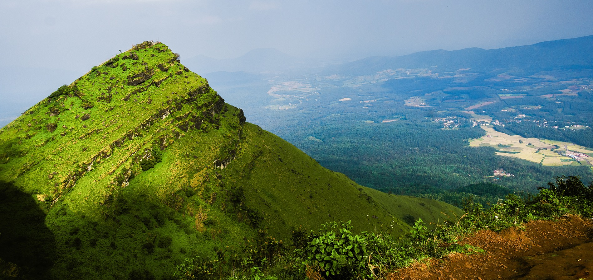
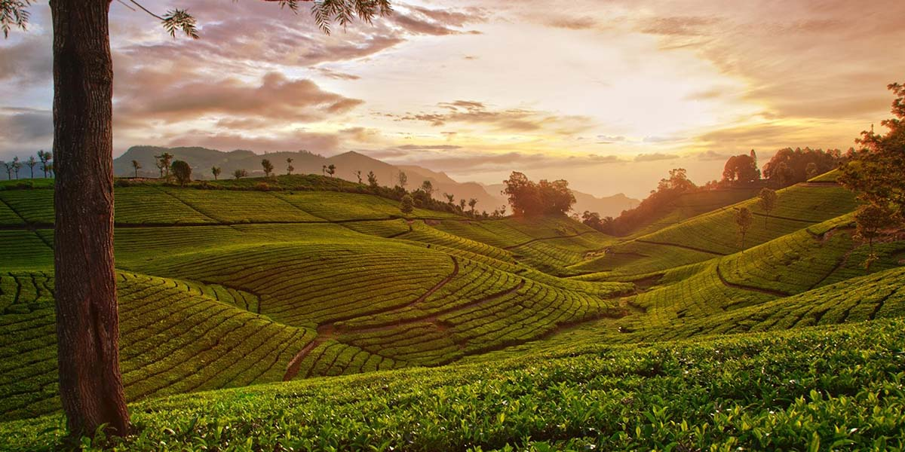

From ancient Hoysala temples to Karnataka's highest peak — our 3-day Bangalore to Chikmagalur cab service winds through fragrant coffee estates, roaring waterfalls and mist-wrapped forests of the Western Ghats. Via Belur, Mullayanagiri and the sacred Baba Budangiri.

Chikmagalur (Chikkamangaluru), meaning "the town of the younger daughter" in Kannada, is one of Karnataka's most beloved hill districts, perched amidst the verdant Western Ghats at elevations ranging from 900 to 1,900 metres. Renowned across India as the birthplace of Indian coffee — introduced to the country by the Sufi saint Baba Budan in the 17th century — Chikmagalur is a landscape of shimmering coffee plantations, silver waterfalls, sacred mountain peaks and dense shola forests that harbour elephants, leopards and rare Malabar giant squirrels.
Our Bangalore to Chikmagalur cab service covers the 3-day round trip in supreme comfort, with a scenic en-route stop at Belur — home to the extraordinary 12th-century Chennakeshava Temple, one of the finest examples of Hoysala architecture in India. The second day is devoted entirely to Chikmagalur's spectacular natural attractions: the towering Mullayanagiri Peak (Karnataka's highest at 1,930 m), the mystical Baba Budangiri cave shrine, and a trio of stunning waterfalls — Jhari Falls, Abbe Falls and Manikyadhara Falls. Day 3 returns via the serene Hirekole Lake before heading back to Bangalore.
Whether you're a couple looking for a misty weekend retreat, a family seeking mountain adventure, or a group of friends chasing waterfalls and coffee aromas — Chikmagalur rewards every traveller with scenery that feels cinematically beautiful. Our well-maintained AC cabs, police-verified drivers and transparent pricing make the journey as comfortable as the destination.
Your cab departs at 7:00 AM from Bangalore on Day 1. The itinerary covers Belur en route on Day 1, full-day Chikmagalur sightseeing on Day 2, and the return journey via Hirekole Lake on Day 3.
Depart Bangalore at 7:00 AM and head northwest towards Chikmagalur. En route, make a significant stop at Belur, where the magnificent Chennakeshava Temple — built by King Vishnuvardhana in 1117 AD to commemorate his victory over the Cholas — stands as one of the greatest achievements of Hoysala architecture. Its intricately carved exterior walls, featuring 650+ sculptures, leave every visitor speechless. Continue onwards through the lush Malnad landscape and check into your hotel in Chikmagalur town by evening.
After breakfast, embark on a full day of Chikmagalur's most spectacular attractions. Begin at Mullayanagiri, Karnataka's highest peak at 1,930 metres, for sweeping panoramic views over the Western Ghats. Descend to the revered Baba Budangiri cave shrine — where the Sufi saint Hazrat Dada Hayath Mir Khalandar is believed to have brought coffee seeds to India from Arabia in the 7th century. The afternoon is reserved for the district's breathtaking waterfall trail, with three distinct cascades through coffee forest and shola woodland.
After a relaxed breakfast and hotel checkout, visit the tranquil Hirekole Lake on the outskirts of Chikmagalur town — a serene bird-watching spot ringed by coffee hills, perfect for a peaceful morning stroll. Before departing, explore the local markets for Chikmagalur's famous fresh-roasted coffee, spices and local produce. Then begin the return drive to Bangalore, arriving by evening.
All-inclusive cab pricing for the entire 3-day round trip (~900 km). Night bata, toll and parking are charged extra at actuals. Hotel accommodation is not included — guests arrange separately.
Note: Night bata (driver overnight allowance), toll charges and parking fees are extra and charged at actuals. Hotel accommodation for 2 nights is not included — guests arrange their own stays. Prices cover cab service only for the full 3-day itinerary (~900 km round trip).
Post-monsoon greenery makes landscapes spectacularly lush; cool, clear weather perfect for trekking Mullayanagiri and waterfall visits (15–22°C)
Most PopularWarmer days (22–32°C) but pleasant at higher elevations; good coffee harvest season; less crowded than winter peak season
Heavy rainfall and the most dramatic waterfalls of the year; some trails may be slippery and a few roads temporarily closed
Drive CarefullyWhy Travel With Us
Well-maintained, powerful AC vehicles ideal for Chikmagalur's winding mountain roads — smooth on the highway and reliable on the narrow ghat sections near Mullayanagiri.
Police-verified drivers well-acquainted with the Bangalore–Chikmagalur route, familiar with every attraction, waterfall trailhead and coffee estate access point.
Vehicle, fuel and all sightseeing transfers are included in the package price. Night bata and tolls are disclosed upfront — no surprise charges at trip end.
Our support team is available round the clock via call and WhatsApp across all 3 days — for hotel recommendations, road conditions, or any assistance en route.